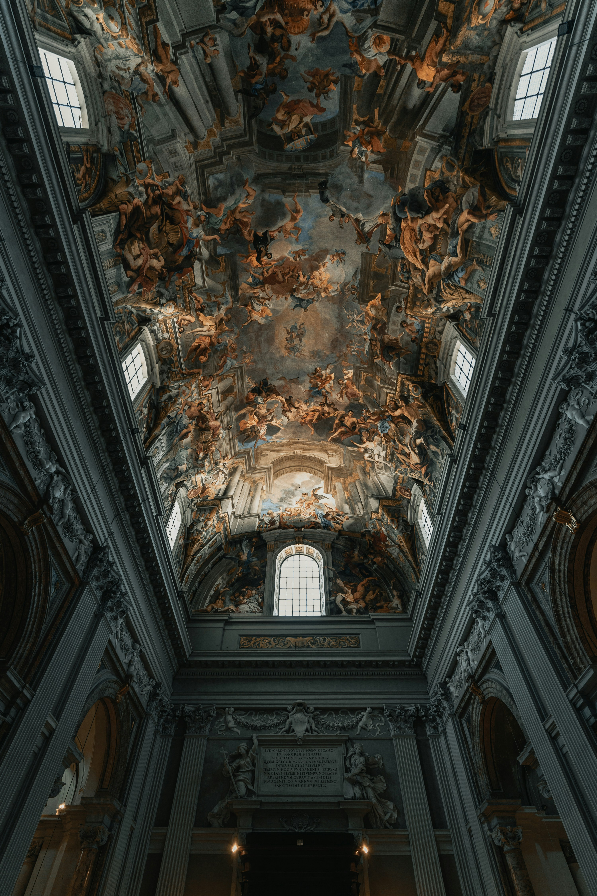
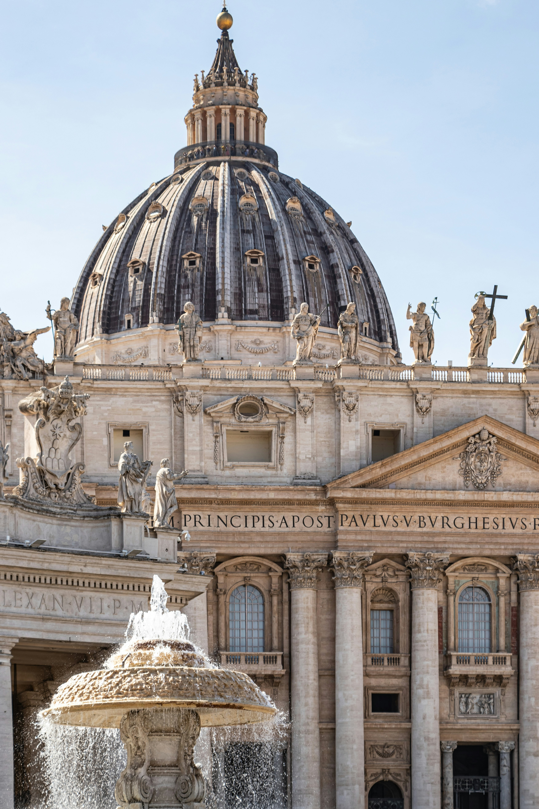
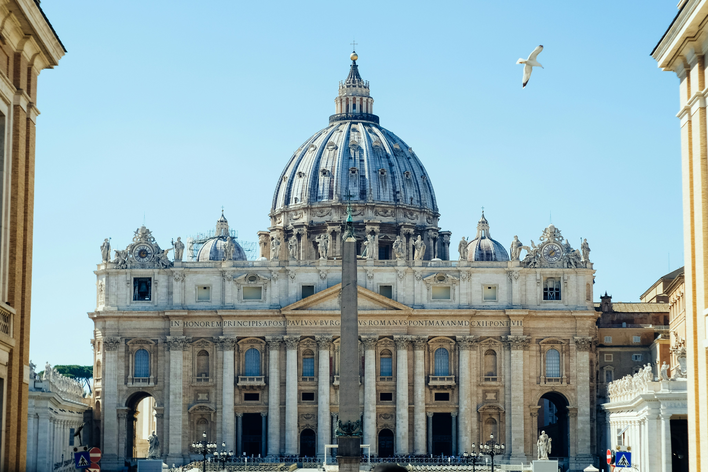
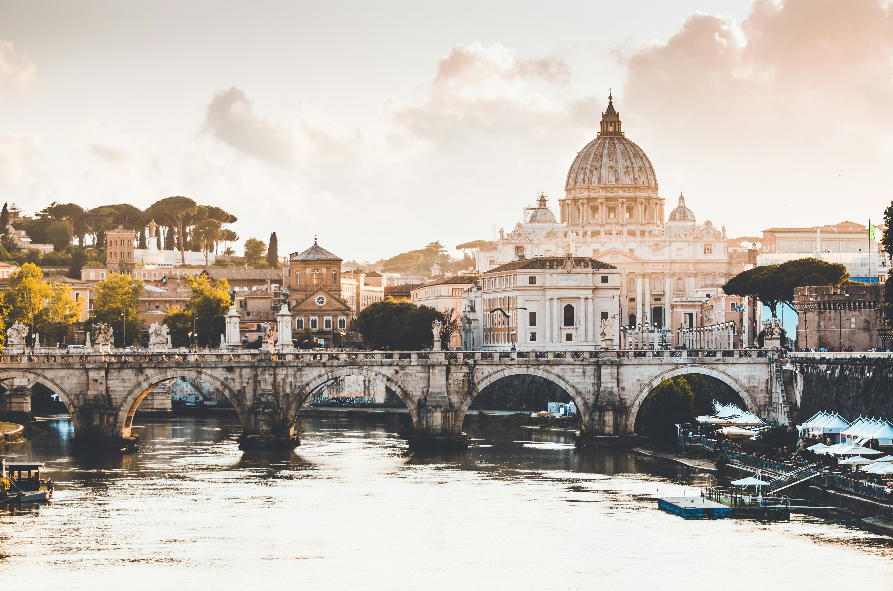

Intérieur de l’église Sant’Ignazio di Loyola à Rome, avec ses fresques baroques.

La Basilique Saint-Pierre au Vatican, avec une fontaine à l’avant, sous la lumière du jour.

Basilique Saint-Pierre au Vatican, un bâtiment en béton blanc surmonté de drapeaux, baigné par la lumière du jour et dominé par son célèbre dôme, de plus loin. 
La Basilique Saint-Pierre au Vatican, avec son dôme emblématique, en plein jour, d'encore plus loin.